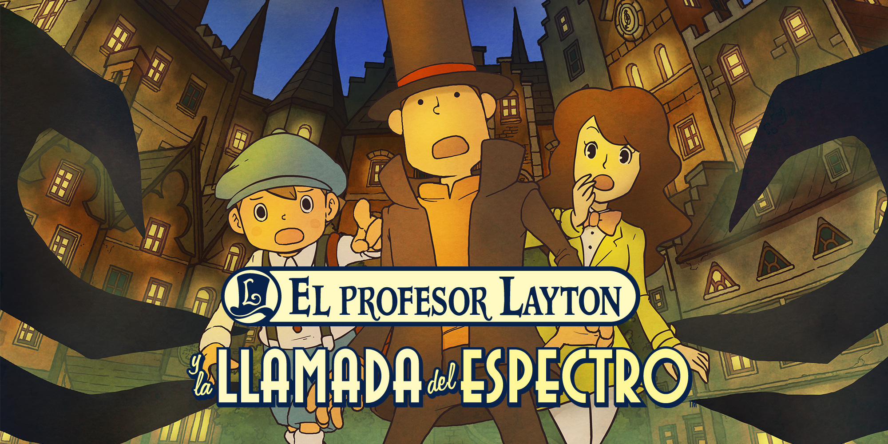

El profesor Layton y la llamada del espectro |
||
|---|---|---|
|  | Sinopsis: El profesor Hershel Layton y su discípulo Luke Triton vuelven en una nueva aventura en la que investigar misterios, en un título que ejerce de precuela de los tres juegos anteriores. Nuestro carismático profesor recibe una carta de un antiguo conocido suyo solicitando su ayuda, pues una gigantesca sombra aparece por las noches en el pueblo de Misthallery destruyéndolo todo a su paso. No tardaremos en descubrir la relación de estos sucesos con una leyenda local que habla de un antiguo espectro que antiguamente protegía al pueblo. |
Desarrollador:Level-5 Plataformas: Nintendo DS Año: 2011 Duracion:20 horas aprox Pais:Japon |
Criticas Profesionales:Jesús BellaLos puzles del profesor Layton siguen funcionando en Nintendo DS en una aventura que goza de un especial interés al narrarnos los comienzos del caballero inglés y su joven discípulo Luke. Todo dentro de una fórmula jugable con tres años de antiguedad, que resulta aún hoy en día atractiva, pero que no está exenta de unos síntomas de agotamiento que probablemente se resuelvan en Nintendo 3DS. Pero para los que no puedan esperar, este lanzamiento calmará su sed, al mismo tiempo que introduce a nuevos usuarios en el fantástico mundo “ghibliano-puzlero” gestado por Level 5. |
Trailer |
Obtener:AlquilarComprar |
Registrate/Iniciar Sesion